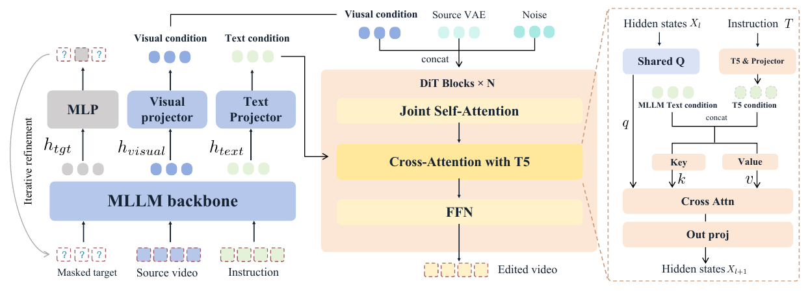
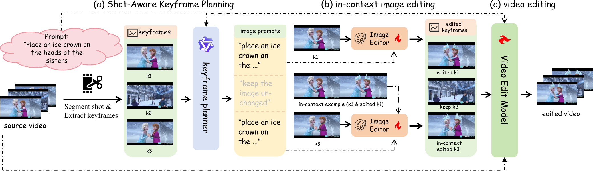
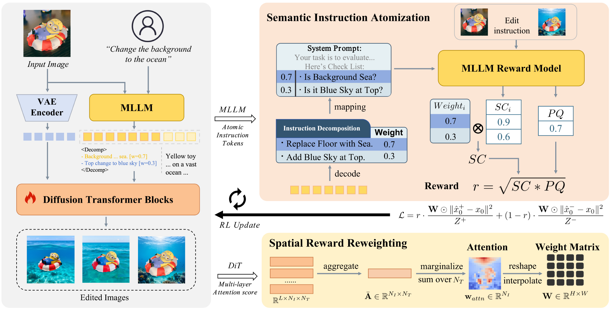
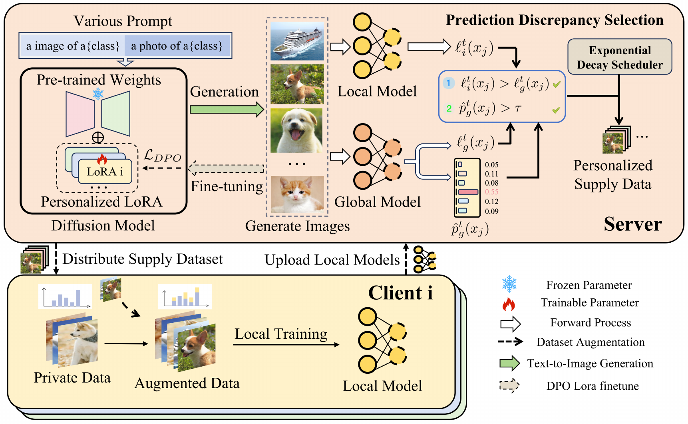

How to Make MLLMs More Effective for Unified Video Generation and Editing?
TL;DR: TANGO routes source visuals and plans target semantics with an MLLM, then adds T5 conditioning for unified video generation and editing.
* Equal contribution · † Corresponding author

TL;DR: TANGO routes source visuals and plans target semantics with an MLLM, then adds T5 conditioning for unified video generation and editing.

TL;DR: Shot-wise keyframe anchors guide multi-shot video editing and help preserve identity across shots.

TL;DR: An image-editing model evaluates its own edits against the instructions it inferred, reducing semantic drift during reinforcement learning.
ACM MM 2026 · Poster

@inproceedings{pmlr-v306-wang26ga,
title = {{F}ed{PDG}: Prediction Discrepancy–Guided Data Generation for Heterogeneous Federated Learning},
author = {Wang, Yuqi and Niu, Jianwei and Wu, Xinghao and Liu, Xuefeng and Hao, Xin},
booktitle = {Proceedings of the 43rd International Conference on Machine Learning},
pages = {129281--129300},
year = {2026},
volume = {306},
series = {Proceedings of Machine Learning Research},
publisher = {PMLR},
url = {https://proceedings.mlr.press/v306/wang26ga.html}
}
TL;DR: Prediction gaps between local and global models guide diffusion-based data generation for heterogeneous clients.
ICML 2026 · Poster
AIGC Algorithm Intern
Controllable multi-shot video editing and MultiShotBench.
AIGC Algorithm Intern
Image composition and automatic video editing.
M.S. in Software Engineering · LDMC Lab
B.E. in Software Engineering · Outstanding Graduate
R&B and hip-hop, music production, sampling, and philosophy. 应无所住，而生其心。